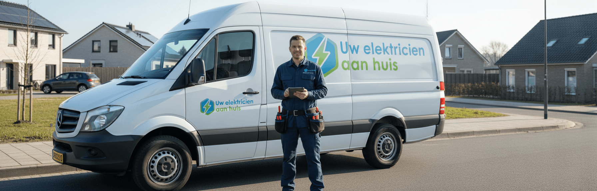

Elektricien Veghel 24 uur ⚡
Verouderde elektra kan leiden tot storingen, overbelasting of zelfs brandgevaar. Daarom is het laten renoveren van uw elektrische installatie een verstandige keuze. Bij Elektricien Veghel zorgen wij voor een complete en veilige vernieuwing van uw elektra, zodat uw woning of bedrijf weer voldoet aan de huidige veiligheidsnormen en toekomstbestendig is.

Wanneer uw woning wat ouder is en er nog verouderde elektriciteitskabels aanwezig zijn, is het verstandig om de elektra te laten renoveren. Na verloop van tijd kunnen kabels slijten, waardoor de binnenzijde van de bedrading bloot komt te liggen. Dit vergroot het risico op kortsluiting of zelfs brand, doordat kabels elkaar kunnen raken. Slechte bekabeling kan bovendien leiden tot stroomuitval en andere gevaarlijke situaties.
In oudere woningen komt dit vaker voor, terwijl nieuwbouwwoningen meestal voldoen aan de huidige veiligheidsnormen. Woont u in een ouder huis met oude bedrading? Dan is het de hoogste tijd om uw elektra te laten vernieuwen door een erkende elektricien.
Bij Elektricien Veghel 24 uur zorgen wij voor een veilige en professionele renovatie van uw elektrische installatie, volledig afgestemd op de moderne eisen. Wilt u weten hoe u uw elektra het beste kunt laten aanleggen of renoveren? Wij voorzien u graag van persoonlijk advies en praktische tips.

Wilt u nieuwe elektra laten aanleggen of de bestaande bedrading in uw woning laten renoveren? Dat kan op verschillende manieren, afhankelijk van de staat van uw installatie. Een belangrijk onderdeel van deze renovatie is de meterkast, het hart van uw elektrische systeem. In veel oudere woningen bevindt zich nog een verouderde stoppenkast, die dringend aan vervanging toe is.
Het vervangen of vernieuwen van een oude stoppenkast is geen eenvoudige taak en kan bij ondeskundig werk leiden tot gevaarlijke situaties, zoals stroomschokken of zelfs brand. Daarom is het verstandig om de elektra installatie en aansluiting altijd te laten uitvoeren door een ervaren en erkende elektricien, zoals de specialisten van Elektricien Veghel 24 uur.
Na verloop van tijd kan er slijtage ontstaan in de meterkast, wat storingen of problemen met de stroomvoorziening tot gevolg kan hebben. Het vervangen van een enkele stop biedt dan meestal geen blijvende oplossing. In dat geval kunnen de specialisten van Elektricien Veghel 24 uur uw meterkast volledig renoveren.
Onze elektriciens kunnen de meterkast uitbreiden met extra groepen of de bestaande groepen vervangen door moderne, veilige varianten. Zo wordt de installatie weer up-to-date gebracht en verkleint u de kans op stroomstoringen en kortsluiting aanzienlijk.

Het is belangrijk om uw elektrische installatie in goede staat te houden om de veiligheid en betrouwbaarheid van uw woning te garanderen. In bepaalde situaties is het daarom noodzakelijk om de elektra te laten renoveren en uw systeem weer volledig up-to-date te brengen.
Bel 085 212 9861Het is verstandig om uw elektra te laten renoveren als uw woning ouder is dan 30 jaar, of wanneer u merkt dat stopcontacten warm worden, zekeringen vaak doorslaan of verlichting knippert. Ook bij een verbouwing of uitbreiding van de woning is het aan te raden de elektrische installatie te vernieuwen.
Voordat u start met de renovatie van uw elektra, is het belangrijk om inzicht te hebben in hoe de bedrading van uw elektrische installatie door de woning loopt. In een standaard huis bestaat deze installatie uit drie hoofdonderdelen. De groepenkast in de meterkast vormt het centrale punt, van waaruit de bedrading doorloopt naar alle stopcontacten en lichtpunten in huis.
Bij Elektricien Veghel 24 uur helpen wij u graag met het vernieuwen van de elektra, of het nu gaat om het plaatsen van een extra stopcontact of het toekomstbestendig maken van uw volledige installatie.
Tijdens de renovatie zorgen onze vakmensen ervoor dat uw meterkast voldoet aan de nieuwste veiligheidsnormen. Indien nodig kunnen wij extra groepen toevoegen of verouderde bedrading vervangen, zodat uw installatie bestand is tegen het gebruik van zwaardere elektrische apparaten of krachtstroom. Zo wordt de stroom veilig en efficiënt verdeeld over alle apparaten in uw woning.
Neem contact op met onze elektricien?